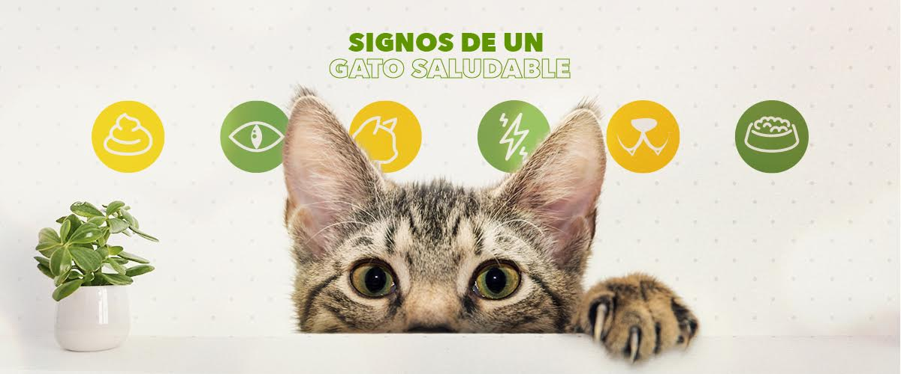
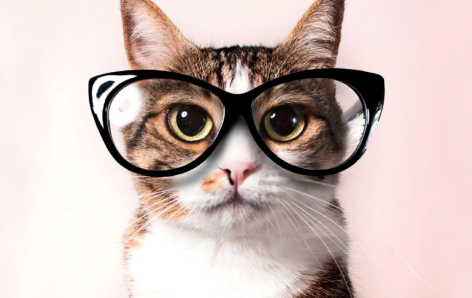

Productos
Carrito
| # |
Nombre |
Precio |
Cantidad |
Total |
Cuidados para un gato saludable

- Alimentación. Siempre de calidad y adaptada a sus etapas de vida.
- Agua. Limpia, en abundancia e idealmente servida en bebederos de acero inoxidable o aluminio.
- Mantenimiento óptimo del arenero.
- Uñas y patas.
- Ejercítalo mediante el juego.
- El cepillado.
- Visitas periódicas al veterinario.
Datos curiosos

- Los gatos pueden rotar sus orejas 180 grados.
- Los gatos pueden pasar hasta 14 horas dormidos.
- Debido a su naturaleza nocturna, los gatos suelen ser mucho más hiperactivos en la tarde.
- La audición del gato promedio es al menos cinco veces más aguda que la de un adulto humano.